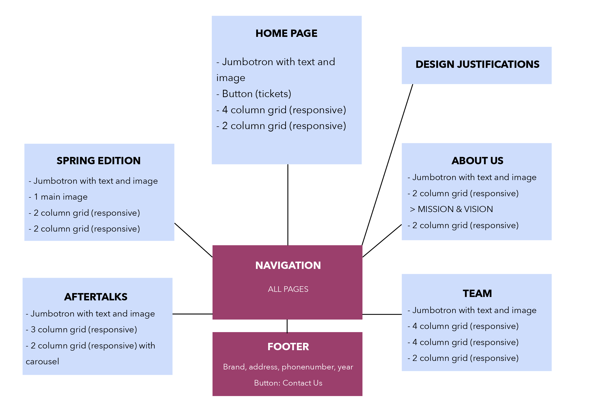

FLOW DIAGRAM
The flow diagram shows that the main page contains a navigation, with 5 pages about Breda Tunes and 1 page about the design justifications.
The navigation ensures that all pages can be reached.
Each page shows which 'column grid' has been used. All pages are responsive, so they can be used on all desktop sizes and mobile phones.
You can also see where special features have been used, such as different buttons and a carousel.